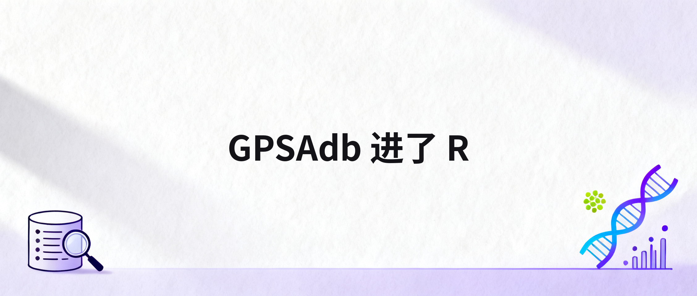
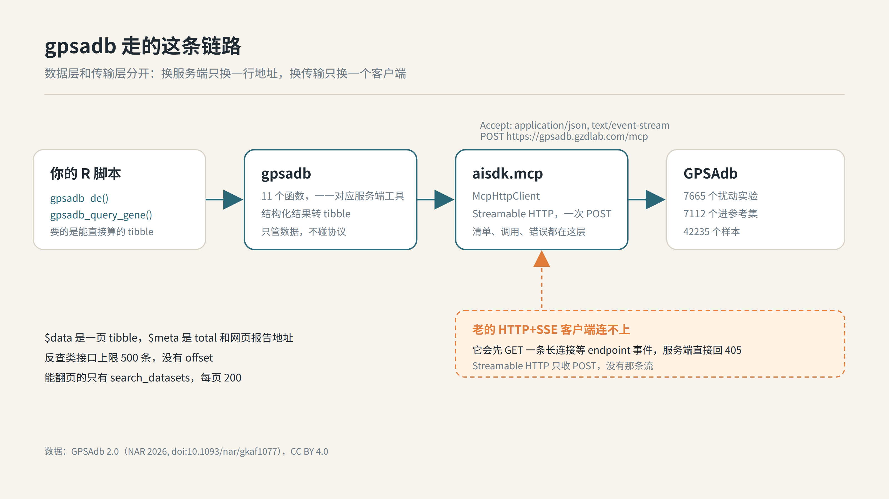
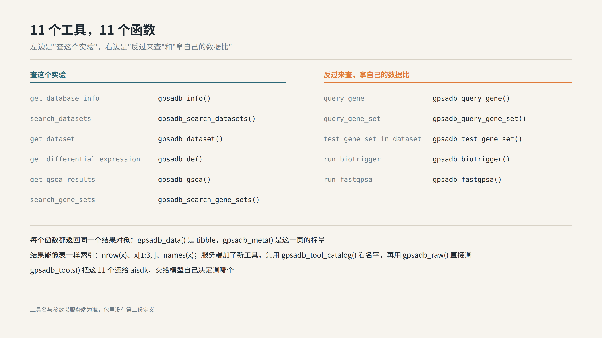
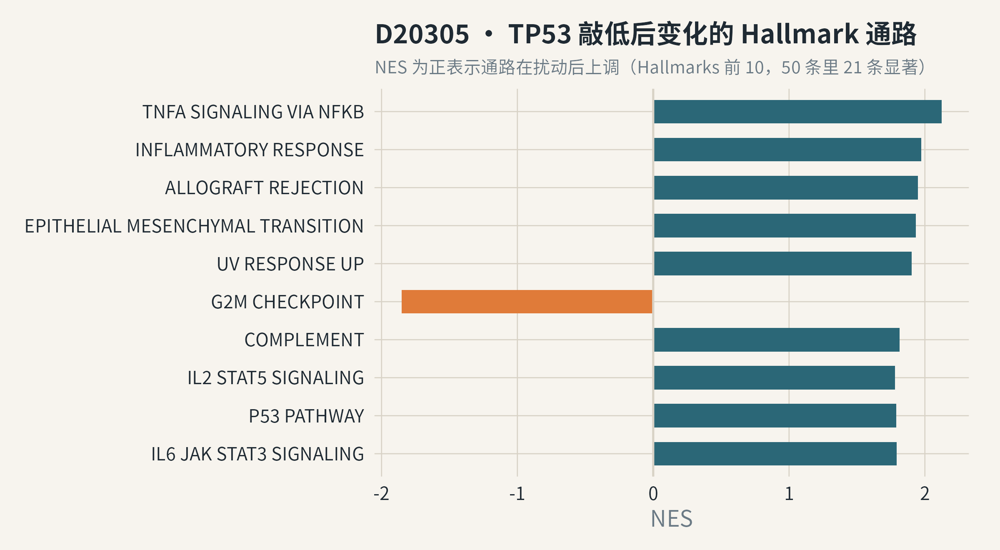
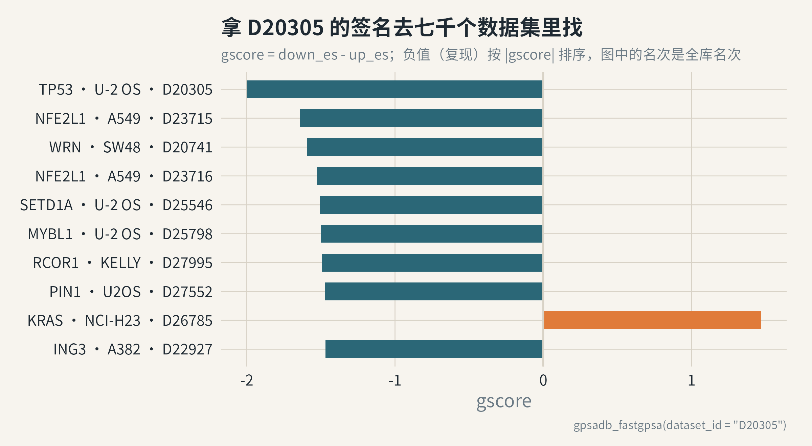
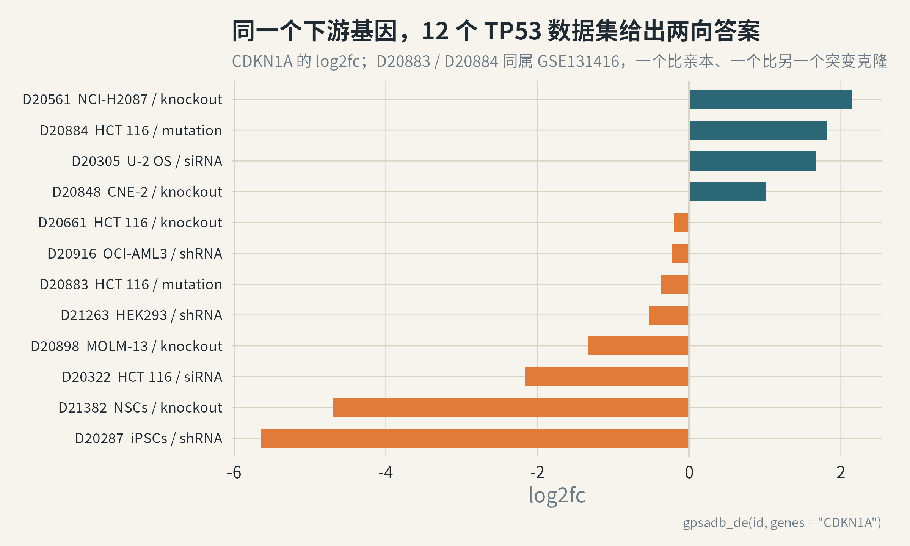
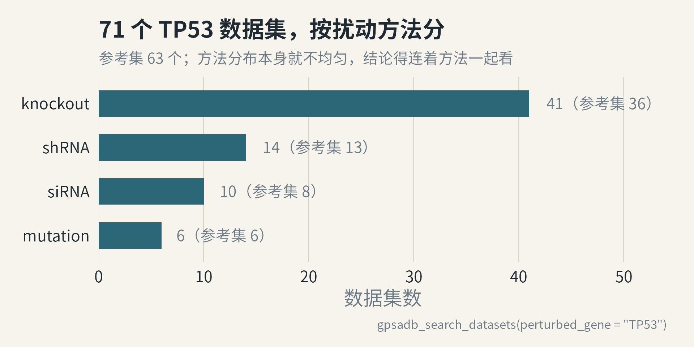

昨天我上了9节课，嗓子都要hold不住了，下课已经是晚上快10点钟了，先回办公室，我就看到了果子推送的《GPSAdb 3.0 上线：分析从一分钟缩短到几秒，还能让 AI 助手直接查数据》。然后我继续干了一会活，在我后面骑自行车回家的路上，我就产生了一个想法。 我可以通过这个mcp把数据接入R。
这个想法，其实也不是昨天晚上想的，而是在一年多以前，我和果子就聊过，要把GPSAdb变成R包。这个数据资源进入R，是非常有用的。然后果子说等他有空再和我细聊，然后就一直鸽到现在。

[!一句话版本：GPSAdb 攒了 7665 个基因扰动 RNA-seq 实验（42235 个样本、2810 个被扰动的基因），以前只能在网页上一个个点。现在
gpsadb包用一句gpsadb_query_gene("CDKN1A")就能把全库 2957 条命中拉回成 tibble。它连的是库里新开的 MCP 端点，为此aisdk.mcp补了一层 Streamable HTTP 传输。]
要说清楚这个包，得先说清 GPSAdb 是个什么东西。
简单讲，它是一个”扰动过某个基因之后，细胞里发生了什么”的合集。
7665 个数据集，每个都是一次扰动对对照的 RNA-seq：敲低 TP53、敲除 BRCA1、CRISPRi 关掉某个转录因子，配上 DESeq2 的差异表达，再配上八套基因集的 GSEA。
7665 个里有 7112 个进参考集，参考集的意思是你做签名匹配时，它会拿你的签名去这七千多个数据集上逐个打分。
这个东西的价值不在”数据多”，在于它把方向翻了过来。
平时我们做实验，是”我把这个基因敲了，看看哪些基因动了”。它有七千多次别人做过的这种实验，于是你可以反过来问：“哪些扰动会让 CDKN1A 升高”。
这个问题，网页上点不出来。
一个 MCP 端点
前阵子看到 GPSAdb 开了 MCP 端点，地址 https://gpsadb.gzdlab.com/mcp，不需要注册，也不需要 API key。
MCP 是给模型调外部工具用的协议。它把库里 11 个查询暴露成了工具：查数据集、查差异表达、查 GSEA、反查某个基因、跑 BioTrigger、跑 fastGPSA。
凡是支持 MCP 的客户端都能用，Claude 的网页版、Claude Code 都是填个地址的事。
我一看，这不就等于 R 也能用了吗。
aisdk.mcp 本来就是个 MCP 客户端，接上就能把工具喂给 agent。我高高兴兴去连，连不上。
先补一层传输
aisdk.mcp 原来会两种接法：本地起一个子进程（stdio），或者老式的 HTTP+SSE。
这个端点两种都不是。
它说的是 2025-06-18 版规范里的 Streamable HTTP：一个端点，收 POST，直接回一个 JSON。没有长连接，没有 session，也没有那种先推一个 endpoint 事件过来的握手。
我拿老的 SSE 客户端去连，服务端回了我一个 405。
对，Method Not Allowed。
那就补一层。
新写的 McpHttpClient 继承 McpClient，所以 list_tools()、call_tool()、as_sdk_tools() 这些接口跟本地服务端完全一样，只有传输换了。没有子进程，也没有后台进程要收拾。
顺手在真服务端上撞出两个坑，都修了。
一个是空参数：工具不需要参数时，序列化出来是 "arguments": []，服务端直接报 cannot unmarshal array into Go value。得发 {}。
另一个是工具报错：原来 call_tool() 遇到 isError: true 是静默返回失败结果，现在抛一个 mcp_tool_error 条件，把服务端那句话原样带出来。
这两个坑，本地假服务端测不出来，只有打真端点才会露。

装两个包
aisdk.mcp 要装 GitHub 版，0.1.1 起才有这层传输。CRAN 上暂时还没有这个包。
# install.packages("remotes")
remotes::install_github("YuLab-SMU/aisdk.mcp") # 传输层
remotes::install_github("YuLab-SMU/gpsadb") # 数据层gpsadb 的默认分支是 devel，install_github() 不写分支也拿得到。
R 4.1 以上。
我特意只让它依赖 aisdk.mcp 和 tibble，装的时候不会拖一堆可视化包进来，反正它也不画图。
先看看有什么
装完先看库的概况，再看它能干什么。
library(gpsadb)
info <- gpsadb_info()
info$datasets
#> [1] 7665
info$reference_datasets
#> [1] 7112
vapply(info$gene_set_libraries, `[[`, "", "name")
#> [1] "Hallmarks" "biocarta" "kegg_legacy" "kegg_medicus"
#> [5] "pid" "reactome" "wikipathways" "Tftargets"八个库，Hallmarks 50 条、reactome 1736 条、wikipathways 830 条，加起来能测的条目有 3852 条。
gpsadb_tool_catalog() 列出底下那 11 个工具。包只包了这 11 个接口，服务端加新工具的时候，你可以用 gpsadb_raw() 直接调，不用等我发版。

顺着一个实验走
挑一个具体的数据集。TP53 敲低，U-2 OS 骨肉瘤细胞，编号 D20305。
hits <- gpsadb_search_datasets(
perturbed_gene = "TP53",
cell_line = "U-2 OS"
)
nrow(hits)
#> [1] 1
hits[, c("id", "method", "n_samples", "n_up", "n_down")]
#> # A tibble: 1 x 5
#> id method n_samples n_up n_down
#> 1 D20305 siRNA 6 274 237U-2 OS 里扰动 TP53 的，就这一个。想多看几株，把 cell_line 去掉，会回来 71 个。
gpsadb_meta(hits, "total") 是全库命中的数量，hits 本身只是这一页，这个区分要记住，后面讲边界还要用。
顺带说一句这个对象。gpsadb_*() 返回的都是同一个 S3 类，gpsadb_result，两头都照顾到了：想当表用的时候它就像张表，nrow(hits)、hits[1:3, ]、names(hits) 都能直接写；想拿元数据的时候，用 gpsadb_meta() 取一个字段，gpsadb_data() 把整张 tibble 拿走交给 dplyr。$data、$meta 也还在，只是不必记。
再看数据集本身：样本在 gpsadb_data() 里，实验信息在 gpsadb_meta() 里。
ds <- gpsadb_dataset("D20305")
gpsadb_meta(ds, "title")
#> [1] "D20305(Knock_down TP53 in U-2 OS)"
gpsadb_meta(ds, "accession")
#> [1] "GSE110762"
nrow(ds)
#> [1] 6
gpsadb_data(ds)$group
#> [1] "control" "control" "control" "treat" "treat" "treat"测了 34657 个基因，274 个上调、237 个下调。原始 counts 的下载链接也在 gpsadb_meta(ds, "downloads") 里，想自己重跑 DESeq2 也行。
然后看结果。差异表达按 padj 排，想查指定基因就直接给名字，一次请求。
de <- gpsadb_de("D20305", genes = c("MDM2", "CDKN1A", "GADD45A"))
de[, c("gene", "gene_id", "log2fc", "padj")]
#> # A tibble: 3 x 4
#> gene gene_id log2fc padj
#> 1 MDM2 ENSG00000135679 0.372 1.40e- 1
#> 2 CDKN1A ENSG00000124762 1.67 1.86e-16
#> 3 GADD45A ENSG00000116717 1.15 1.03e- 6一页 25 条是默认，limit = 500 能一次拉 500 条，再往上就得靠阈值筛。
GSEA 也是现成的，八套库随便挑。
gsea <- gpsadb_gsea("D20305", limit = 10)
gsea[, c("term", "nes", "padj")]
#> # A tibble: 10 x 3
#> term nes padj
#> 1 HALLMARK_TNFA_SIGNALING_VIA_NFKB 2.12 1.67e- 9
#> 2 HALLMARK_INFLAMMATORY_RESPONSE 1.97 1.67e- 9
#> 3 HALLMARK_ALLOGRAFT_REJECTION 1.95 1.67e- 9
#> 4 HALLMARK_EPITHELIAL_MESENCHYMAL_TRANSITION 1.93 4.20e- 950 个 Hallmark 里有 21 个显著。

反过来问问题
上面那些，网页上也能点出来。
真正的差别在这里：不问”这个实验里什么变了”，而问”谁能让它变”。
up <- gpsadb_query_gene("CDKN1A", direction = "up", limit = 500)
gpsadb_meta(up, "total")
#> [1] 2957
gpsadb_meta(up, "n_up")
#> [1] 29572957 个数据集里，CDKN1A 显著升高。
up 拿回来的是这一页，按 padj 排，500 已经是上限。想看得细一点，就按细胞系筛，或者把 padj 和 log2fc 的阈值收紧。
d <- gpsadb_data(up)
hepg2 <- d[grepl("Hep G2", d$cell_line), ]
nrow(hepg2)
#> [1] 46按被扰动的基因归并一下，就能看出哪些扰动反复出现在名单里。
sort(table(d$perturbed_gene), decreasing = TRUE)[1:6]
#> MUC1 SUV39H1 BNC1 FOXM1 IRF2BP2 RSAD2
#> 6 5 4 4 4 4通路也能反查，前提是先把条目名查准。八个库的命名各有一套前缀，别猜。
gpsadb_data(gpsadb_search_gene_sets(query = "hypoxia", testable_only = TRUE))
#> library term size
#> 1 Hallmarks HALLMARK_HYPOXIA 200
#> 2 biocarta BIOCARTA_P53HYPOXIA_PATHWAY 21
#> 3 reactome REACTOME_CELLULAR_RESPONSE_TO_HYPOXIA 75
#> 4 reactome REACTOME_REGULATION_OF_GENE_EXPRESSION_BY_HYPOXIA_INDUCIBLE_FACTOR_1 11有了准名字，就能问”哪些扰动会激活缺氧通路”：
act <- gpsadb_query_gene_set("HALLMARK_HYPOXIA", direction = "up")
gpsadb_meta(act, "total")
#> [1] 3955我自己的数据
前面都是查库里现成的实验。它最有用的一步，是把你自己的结果扔进去。
签名匹配（fastGPSA）收三种输入，任选一种。
# 换成你自己的 DESeq2 结果，只要 gene / log2fc 两列
mine <- read.csv("my_deseq2.csv")
up_genes <- mine$gene[order(-mine$log2fc)][1:50]
down_genes <- mine$gene[order( mine$log2fc)][1:50]
sig <- gpsadb_fastgpsa(up_genes = up_genes, down_genes = down_genes)
sig[, c("dataset", "perturbed_gene", "cell_line", "gscore", "effect")]结果里有个 gscore，就是 down_es - up_es，在每个参考数据集上算出来的。
gscore 小于 0（effect 写 Inhibited）表示这个扰动复现了你的签名，大于 0 表示它把你反过来了。
方向搞没搞反，怎么自检？
拿 D20305 自己的签名去查，它自己应该排第一。
self <- gpsadb_fastgpsa(dataset_id = "D20305")
gpsadb_data(self)$dataset[1]
#> [1] "D20305"
gpsadb_data(self)$gscore[1]
#> [1] -2排第一，gscore 是 -2，Inhibited，说明它确实在”复现”这一侧。
我先拿 D20305 的差异表达当替身，把三种输入都试了一遍，答案不完全一样。双侧签名取 Top 10，和 500 个基因的完整排序表取 Top 10，扰动基因重叠 6 个。
排名靠的是 p 值和阈值切出来的那份名单，排序表靠的是全部基因的次序，后者信息量大一些，前提是别按 p 值截断，服务端也说了要大于 200 个基因。

还有一个更简单的输入，BioTrigger，只收一组基因，不分上下调。
bt <- gpsadb_biotrigger(c("HIF1A", "VEGFA", "SLC2A1", "PDK1", "BNIP3"))
bt[, c("dataset", "perturbed_gene", "cell_line", "es", "effect")]它的 es 大于 0，表示这组基因在扰动上调的基因里富集；小于 0 是在下调的基因里富集。多数扰动是功能缺失，所以 es 小于 0 往往提示被扰动的那个基因本身是这组基因的促进者。
结论稳不稳
七千多个数据集，同一个基因被扰动几十次，这是件好事，也是一件麻烦事。
好事是你可以看复现。麻烦是它们经常不一致。
我拉了 12 个扰动 TP53 的数据集，看同一组下游基因。
genes <- c("TP53", "MDM2", "CDKN1A", "GADD45A", "BAX", "BBC3")
tp53 <- gpsadb_search_datasets(perturbed_gene = "TP53", reference_only = TRUE)
ids <- gpsadb_data(tp53)$id
de <- do.call(rbind, lapply(ids[1:12], function(id) {
d <- gpsadb_de(id, genes = genes)
if (nrow(d)) cbind(dataset = id, d[, c("gene", "log2fc", "padj")])
}))CDKN1A 这一行，从 -5.64 到 +2.15 都有。

最离谱的一对是 D20883 和 D20884，都标着 HCT 116、都标着 mutation、都来自同一个 GSE131416，CDKN1A 一个是 -0.38，一个是 +1.82。
同一株细胞，同一种方法，为什么会反着来？
我去看了样本元数据才明白：D20883 是 mut4 比亲本 HCT116，D20884 是 mut9 比 mut5，两个不同的 TP53 突变克隆互相比。
method 那一栏只写了 mutation，比的是什么，藏在样本的 group_name 里。
所以”TP53 敲低之后 CDKN1A 上升”这句话，只在某些细胞系和某些对照下成立。你要是拿一篇文章的结论当公理，这里正好能验一下。
我数了一下，71 个 TP53 数据集里，63 个进了参考集。参考集的入选条件是：有排序表、上下调基因合计 ≥150、至少算过 4 次 GSEA，剩下 8 个不满足。

方法分布也不均匀：敲除 41 个、shRNA 14 个、siRNA 10 个、突变 6 个。
我本来以为”TP53 敲除”是个足够统一的标签，摊开一看不是。
所以你不光要看结论，还得看是哪种方法得出的结论。
这库的用处
说四件我觉得实在的。
第一件，反向找调控因子。手里有一个关键基因，想知道谁在上游管它，gpsadb_query_gene() 一次把全库扫一遍，比自己在 GEO 里翻快得多。
第二件，给你的表型找参照。你做了个处理，测出一堆差异基因，gpsadb_fastgpsa() 告诉你哪个已知的基因扰动跟你最像，下一步该敲哪个基因，往往就在这里。
第三件，验一致性。同一个结论在几十个独立实验里是稳的，还是只在某一株细胞系里成立，摊成矩阵一看就知道。
第四件，喂给 agent。gpsadb_tools() 把这 11 个工具直接交给模型，你问一句话，它自己决定查哪个数据集、翻几页。
aisdk::generate_text(
model = "openai:gpt-4o-mini",
prompt = "Which perturbations reproduce the D20305 state in other cell lines?",
tools = gpsadb_tools(),
max_steps = 6
)工具名和参数定义都是从服务端读的，包里没有第二份，不会漂。
有边界
第一，反查类接口（query_gene、query_gene_set）上限 500 条，而且没有 offset。
这是我写 demo 时才发现的，一开始我还想翻页。翻不了。
命中超过 500 条呢？只能收窄条件，padj 卡紧一点，或者要求 |log2fc| 大于 1。
能翻页的只有 gpsadb_search_datasets()，每页最多 200。
第二，这不是因果。签名相似只能说明转录层面像，不代表机制相同。库自己也只敢说 “mimic or reverse”。
第三，方向跟细胞系、跟方法强相关，上面 CDKN1A 那张图就是证据。做结论的时候，把细胞系和方法一起报出来，别只报一个 NES。
第四，服务端的 release 会更新，version 那个字段是构建号，我两次请求之间就从 20819e7 变成了 050d569，别拿它做判断。要缓存，就按 release 走。
写在最后
两个包都在 GitHub 上：
remotes::install_github("YuLab-SMU/aisdk.mcp")
remotes::install_github("YuLab-SMU/gpsadb")gpsadb 的 examples/ 下有五个能直接跑的脚本，从浏览数据到批量矩阵，每个对应一个具体问题，我写的时候就按”我会怎么问”来排的。
数据本身请引用它的文章：
Guo S. et al. (2026) GPSAdb 2.0: an expanded atlas of gene-perturbation transcriptomes with enhanced tools for regulatory gene discovery. Nucleic Acids Research 54(D1):D1082–D1086.
用的时候记得看 license，数据是 CC BY 4.0。
跑不通的地方，到 GitHub 提 issue，比在后台留言有效。